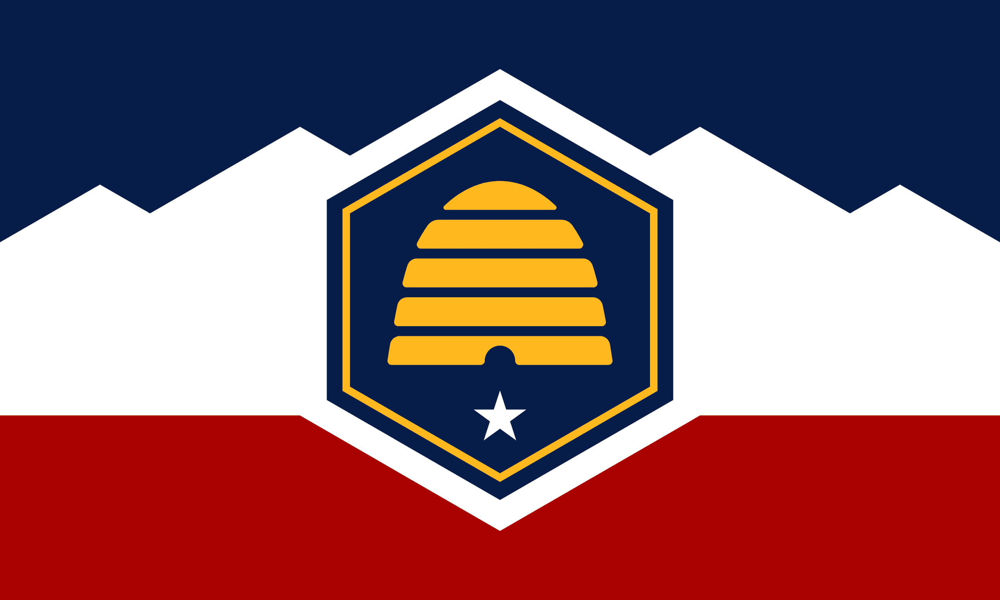

About Me
My name is Aubrey Haslam! I live in northern Utah with my husband and little dog Suki. I'm currently a digital artist for Monolithic Constructors Inc. I'm working towards my bachelor's in Professional Studies at BYU Pathway Worldwide. My degree consists of three certificates: Graphic Design, Web Development, and Computer Programming.
Utah, USA

Utah is a landlocked state in the western United States known for its diverse geography, which includes mountains, deserts, and national parks. The capital is Salt Lake City, and the state is famous for its outdoor recreation, particularly skiing and hiking in its five national parks.